2．行列式的一些新应用
行列式出现于线性方程组的求解（第25章第3节）。这个问题和消元法、坐标变换、多重积分中的变数替换、解行星运动的微分方程组、将三个或多个变数的二次型及二次型束（一个束是A＋λB，这里A，B是指定的型，而λ是参数）化简成标准型，全都引起行列式的各种新应用。19世纪的工作直接继承于克莱姆、贝祖、范德蒙德、拉格朗日和拉普拉斯的工作。
行列式这个词（高斯用以指二次型
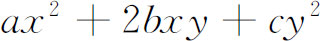
的判别式）是柯西把它用于已经出现在18世纪著作中的行列式的。把元素排成方阵并采用双重足标的记法也是属于他的。(1)例如一个三阶的行列式写成（两条竖线是凯莱在1841年引进的）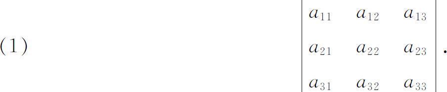
在这篇文章中，柯西给出了行列式的第一个系统的、几乎是近代的处理。主要结果之一是行列式的乘法定理。拉格朗日(2)已经对三阶行列式给出了这个定理，但因为他的行列式的行是一个四面体的顶点的坐标，他未被引向普遍化。按柯西的说法（用现代记号表达），一般定理为
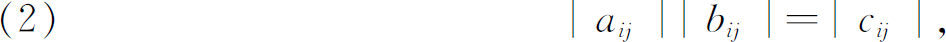
这里
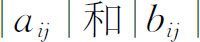
代表n阶行列式，而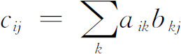
。就是说，在乘积的第i行第j列的项是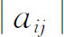
的第i行和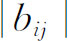
的第j列的对应元素的乘积之和。这个定理在1812年曾由比内（Jacques P．M．Binet，1786—1856）叙述过但没有令人满意的证明(3)。柯西还改进了拉普拉斯行列式展开定理，并给了一个证明（第25章第3节）。舍克（Heinrich F．Scherk，1798—1885）在他的《数学论文》（Mathematische Abhandlungen，1825）中给出了行列式的几个新的性质。他建立了只有一行（或列）不同的两个行列式相加的规则和一常数乘行列式的规则。他还叙述了，当一个方阵的某一行是另两行或几行的线性组合时，其行列式为零，以及三角行列式（主对角线以上或以下的所有元素是零）的值是主对角线上的元素的乘积。
在50多年内行列式理论的始终不渝的作者之一是詹姆斯·西尔维斯特（1814—1897）。在赢得剑桥大学数学荣誉会考一等第二名后，他仍然被禁止在剑桥大学任教，因为他是犹太人。从1841年起到1845年，他是弗吉尼亚（Virginia）大学的教授。后来他回到伦敦，并从1845年起到1855年担任书记官和律师，他接受了在英格兰伍尔芝（Woolwich）军事科学院的比较低的教授职位，并在那里任职到1871年。经过一些年的多方活动以后成为霍普金斯（Hopkins）大学的教授，在那里自1876年起演讲不变量理论，他开创了合众国的纯数学的研究，并创办了《美国数学杂志》。1884年他回到英格兰，70岁时成为牛津大学教授，并保持职位到去世。
詹姆斯·西尔维斯特是一个活泼、敏感、兴奋、热情甚至容易激动的人。他的谈话是出色而机敏的，他用火一般的热情介绍他的思想。在他的文章中，他使用热烈的语言。他引进了很多新术语，开玩笑地把自己比作亚当（Adam，亚当曾给野兽和花起名字）。虽然他同力学和不变量理论等许多不同的领域相联系，但他不爱好系统而彻底地做出理论。实际上他频繁地发表猜想，虽然其中许多是出色的，但其余的是不正确的。他忧伤地承认，他大陆的朋友们“在损害他的判断力的条件下恭维他的预见力”。他的主要贡献是组合的思想和从较具体的发展中进行抽象。
詹姆斯·西尔维斯特的重要成就之一是改进了从一个n次的和一个m次的多项式中消去x的方法，他称这为析配消元法（dialytic method）(4)。例如，为消去方程
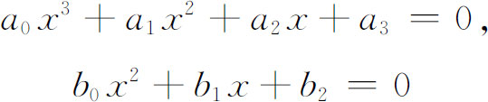
中的x，他形成五阶行列式
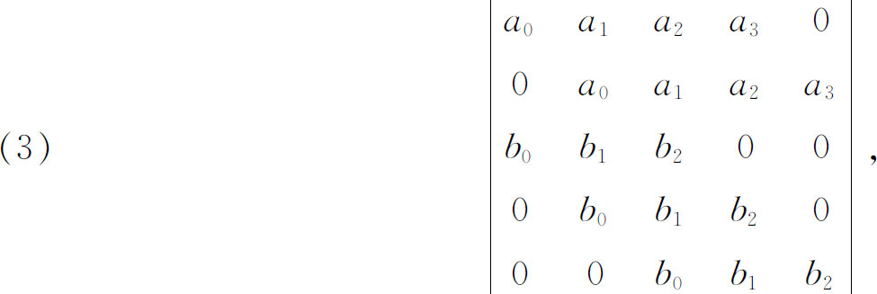
这个行列式为零是这两个方程有公共根的必要充分条件。西尔维斯特没有给出证明。这方法，如柯西所证明的(5)，引导到欧拉和贝祖方法的同样结果。
当行列式的元素是t的函数时，它的导数的公式首先由雅可比在1841年给出(6)。设aij是t的函数，Aij是aij的余子式，D是行列式，则
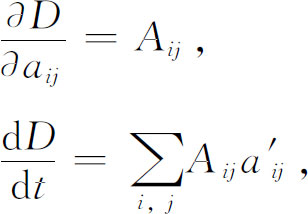
这里撇表示对t的微商。
行列式被应用到另一方面，即应用到多重积分的变数替换中。首先由雅可比（1832年和1833年）找到一些特殊的结果。后来卡塔兰（Eugène Charles Catalan，1814—1894）在1839年(7)给出今天大学生所熟悉的结果。例如二重积分
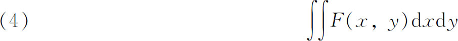
在变数替换
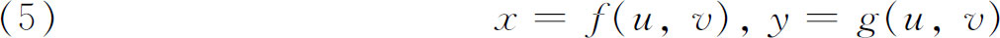
下成为
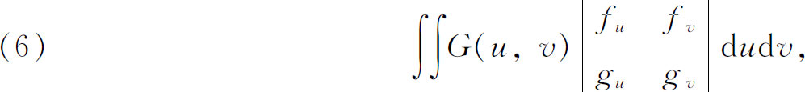
这里
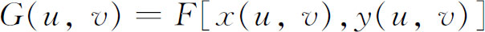
。（6）中的行列式称为x，y关于u，v的雅可比行列式或函数行列式。雅可比对于函数行列式专门有一篇重要文章(8)。在此文中，雅可比考虑了n个函数u1，u2，…，un，其中每一个都是x1，x2，…，xn的函数；他提出问题，问什么时候从这n个函数能消去xi使得这些ui用一个方程联系起来。如果这不可能，就称函数ui是无关的。答案是，如果ui关于xi的雅可比行列式是零，则函数不是无关的，反之也对。他还给出了雅可比行列式的乘积定理，即如果ui是yi的函数，而yi是xi的函数，则ui关于xi的雅可比行列式是ui关于yi的雅可比行列式和yi关于xi的雅可比行列式的乘积。